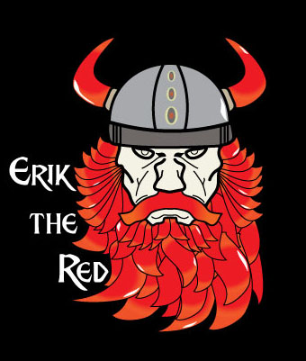

About Me
Hi, my name is Erik Bertelsen and I love the outdoors. This website shows images of mine and my love of nature.

About My Logo
I designed my logo as a viking, my reason for this is becasue I have a half danish background and it's history has a had a big impact on me. I was named after a a viking Erik The Red who discoverd Greenland.